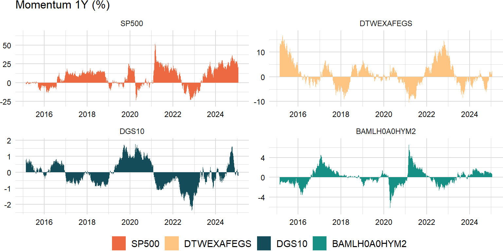
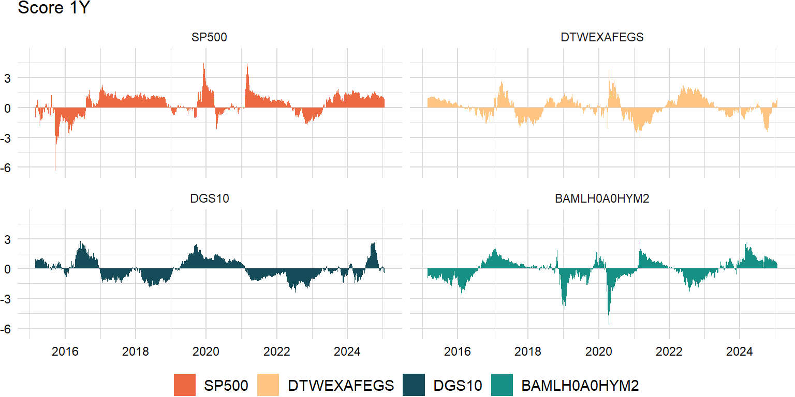
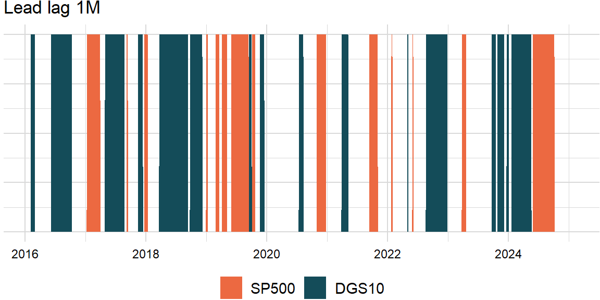

factors_r <- c("SP500", "DTWEXAFEGS") # "SP500" does not contain dividends; note: "DTWEXM" discontinued as of Jan 2020
factors_d <- c("DGS10", "BAMLH0A0HYM2")Price momentum
One month reversal and 2-12 month momentum are two ends of the spectrum. The general trend indicates that positive acceleration leads to reversals or negative acceleration leads to rebounds. An unsustainable acceleration leading to reversal can reconcile the one-month reversal and 2-12 month momentum. The key is that it implies that acceleration is not sustainable.
order <- 20# "Momentum, Acceleration, and Reversal"
momentum_xts <- na.omit(lag(roll_prod(1 + returns_xts, width - order, min_obs = 1) - 1, order))
Time-series score
Suppose we are looking at \(n\) independent and identically distributed random variables, \(X_{1},X_{2},\ldots,X_{n}\). Since they are iid, each random variable \(X_{i}\) has to have the same mean, which we will call \(\mu\), and variance, which we will call \(\sigma^{2}\):
\[ \begin{aligned} \mathrm{E}\left(X_{i}\right)&=\mu\\ \mathrm{Var}\left(X_{i}\right)&=\sigma^{2} \end{aligned} \]
Let’s suppose we want to look at the average value of our \(n\) random variables:
\[ \begin{aligned} \bar{X}=\frac{X_{1}+X_{2}+\cdots+X_{n}}{n}=\left(\frac{1}{n}\right)\left(X_{1}+X_{2}+\cdots+X_{n}\right) \end{aligned} \]
We want to find the expected value and variance of the average, \(\mathrm{E}\left(\bar{X}\right)\) and \(\mathrm{Var}\left(\bar{X}\right)\).
Expected value
\[ \begin{aligned} \mathrm{E}\left(\bar{X}\right)&=\mathrm{E}\left[\left(\frac{1}{n}\right)\left(X_{1}+X_{2}+\cdots+X_{n}\right)\right]\\ &=\left(\frac{1}{n}\right)\mathrm{E}\left(X_{1}+X_{2}+\cdots+X_{n}\right)\\ &=\left(\frac{1}{n}\right)\left(n\mu\right)\\ &=\mu \end{aligned} \]
Variance
\[ \begin{aligned} \mathrm{Var}\left(\bar{X}\right)&=\mathrm{Var}\left[\left(\frac{1}{n}\right)\left(X_{1}+X_{2}+\cdots+X_{n}\right)\right]\\ &=\left(\frac{1}{n}\right)^{2}\mathrm{Var}\left(X_{1}+X_{2}+\cdots+X_{n}\right)\\ &=\left(\frac{1}{n}\right)^{2}\left(n\sigma^{2}\right)\\ &=\frac{\sigma^{2}}{n} \end{aligned} \]
# volatility scale only
score_xts <- na.omit(momentum_xts / roll_sd(momentum_xts, width, center = FALSE, min_obs = 1))# overall_xts <- xts(rowMeans(score_xts), index(score_xts))
# overall_xts <- overall_xts / roll_sd(overall_xts, width, center = FALSE, min_obs = 1)
# colnames(overall_xts) <- "Overall"# score_xts <- na.omit(merge(overall_xts, score_xts))
Outlier detection
Interquartile range
Outliers are defined as the regression residuals that fall below \(Q_{1}−1.5\times IQR\) or above \(Q_{3}+1.5\times IQR\):
- https://stats.stackexchange.com/a/1153
- https://stats.stackexchange.com/a/108951
- https://robjhyndman.com/hyndsight/tsoutliers/
outliers <- function(z) {
n_cols <- ncol(z)
result_ls <- list()
for (j in 1:n_cols) {
y <- z[ , j]
if (n_cols == 1) {
x <- 1:length(y)
} else {
x <- cbind(1:length(y), z[ , -j])
}
coef <- coef(lm(y ~ x))
predict <- coef[1] + x %*% as.matrix(coef[-1])
resid <- y - predict
lower <- quantile(resid, prob = 0.25)
upper <- quantile(resid, prob = 0.75)
iqr <- upper - lower
total <- y[(resid < lower - 1.5 * iqr) | (resid > upper + 1.5 * iqr)]
result_ls <- append(result_ls, list(total))
}
result <- do.call(merge, result_ls)
return(result)
}outliers_xts <- outliers(score_xts)
Contour ellipsoid
Granger causality
\[ \begin{aligned} \left(R\hat{\beta}-r\right)^\mathrm{T}\left(R\hat{V}R^\mathrm{T}\right)^{-1}\left(R\hat{\beta}-r\right)\xrightarrow\quad\chi_{Q}^{2} \end{aligned} \]
- https://github.com/cran/lmtest/blob/master/R/waldtest.R
- https://en.wikipedia.org/wiki/Wald_test#Test(s)_on_multiple_parameters
- https://math.stackexchange.com/a/1591946
granger_test <- function(x, y, order) {
# compute lagged observations
lag_x <- lag(x, order)
lag_y <- lag(y, order)
# collect series
data <- merge(x, y, lag_x, lag_y)
colnames(data) <- c("x", "y", "lag_x", "lag_y")
# fit full model
fit <- lm(y ~ lag_y + lag_x, data = data)
R <- matrix(c(0, 0, 1), nrow = 1)
coef <- fit$coefficients
r <- 0 # technically a matrix (see Stack Exchange)
wald <- t(R %*% coef - r) %*% solve(R %*% vcov(fit) %*% t(R)) %*% (R %*% coef - r)
result <- 1 - pchisq(wald, 1)
return(result)
}roll_lead_lag <- function(x, y, width, order, p_value) {
n_rows <- nrow(x)
x_name <- names(x)
y_name <- names(y)
x_y_ls <- list()
y_x_ls <- list()
for (i in width:n_rows) {
idx <- max(i - width + 1, 1):i
x_y <- granger_test(x[idx], y[idx], order)
y_x <- granger_test(y[idx], x[idx], order)
x_y_status <- (x_y < p_value) && (y_x > p_value)
y_x_status <- (x_y > p_value) && (y_x < p_value)
x_y_ls <- append(x_y_ls, list(x_y_status))
y_x_ls <- append(y_x_ls, list(y_x_status))
}
result <- data.frame(do.call(c, x_y_ls), do.call(c, y_x_ls))
result <- xts(result, index(x)[width:n_rows])
colnames(result) <- c(x_name, y_name)
return(result)
}p_value <- 0.05score_x_xts <- score_xts[ , "SP500"]
score_y_xts <- score_xts[ , "DGS10"]lead_lag_xts <- roll_lead_lag(score_x_xts, score_y_xts, width, order, p_value)